컴퓨터그래픽스운용기능사 (2006-07-16 기출문제)
1과목: 산업디자인 일반
1. 신문광고의 장점이 아닌 것은?
- 안정성과 확실성이 높다.
- 신뢰성과 설득력이 뛰어나다
- 보존성과 기록성을 갖고 있다.
- 기사나 타 광고의 영향을 받는다.
(정답률: 76%)

2. 포스터는 정보를 전달하기 위하여 제작되고, 의자는 휴식이나 어떤 작업을 위하여 형태를 구성하고 있으며, 집은 사람이 살기 위하여 존재한다. 이러한 것은 디자인의 조건 중 무엇에 해당되는가?
- 심미성
- 합목적성
- 독창성
- 경제성
(정답률: 96%)
3. 1960년대 서부유럽과 미국에서 일어난 팝 디자인(Pop Design)운동의 특징이 아닌 것은?
- 역동성
- 유선형
- 직선적, 수직적 조형
- 경제성
(정답률: 70%)
4. 인간의 생활공간에 대한 설명 중 적절하지 않은 것은?
- 사람들이 생활의 많은 시간을 보내는 공간을 때와 장소에 따라서 그 역할에 가장 적합하게 구성하는 것이 실내 디자인이다.
- 생활공간은 그 성격에 따라 사적인 생활권과 공공의 생활권으로 나눌 수 있다.
- 개성이나 취향이 최대한 반영되어 구성되는 주택은 공공의 생활권에 속한다고 할 수 있다.
- 작업공간에서는 일의 능률이 중시되고, 개인의 개성은 제한된다.
(정답률: 76%)
5. 면을 소극적인 면(Negative Plane)과 적극적인 면(Positive Plane)으로 구분할 때 적극적인 면의 성립 조건은?
- 점의 밀집이나 선의 집합으로 성립된다.
- 선으로 둘러싸여 성립된다.
- 공간에서 입체화된 점이나 선에 의해서 성립된다.
- 선의 이동이나 폭의 확대 등에 의해서 성립된다.
(정답률: 64%)
6. 매슬로우(Maslow)의 욕구 5단계 순서가 바르게 나열된 것은?
- 자아 욕구→생리적 욕구→안전의 욕구→사회적 욕구→자기실현의 욕구
- 생리적 욕구→자아욕구→사회적 욕구→안전의 욕구→자기실현의 욕구
- 자아 욕구→생리적 욕구→사회적 욕구→안전의 욕구→자기실현의 욕구
- 생리적 욕구→안전의 욕구→사회적 욕구→자아 욕구→자기실현의 욕구
(정답률: 74%)
7. 실내 공간 형태에 관한 설명이 잘못된 것은?
- 정방형 -영역구분이 간단하며 상층부에 시원한 바람과 아름다운 경치가 가능하다.
- 원형 - 실내 공간이 내부로 향하여 집중감을 주며 시선을 부드럽게 만든다.
- 장방형 - 길이가 긴 쪽의 방향성이 강조되며, 문이나 창문의 위치가 중요시 된다.
- 수평적 공간 - 일반 주택에 적합하며, 계단을 오르내릴 필요가 없다.
(정답률: 57%)
8. 다음 중 "아비뇽의 처녀들"을 그린 입체파 화가는?
- 브라크
- 피카소
- 세잔
- 칸딘스키
(정답률: 87%)
9. 디자인 원리 중 동일한 요소나 대상을 둘 이상 배열하는 것을 무엇이라고 하는가?
- 조화
- 점증
- 균형
- 반복
(정답률: 79%)
10. 다음 중 반복, 점이, 방사 등에 의해 동적인 활기를 느낄 수 있는 디자인 원리는 무엇인가?
- 조화
- 리듬
- 비례
- 균형
(정답률: 82%)
11. 다음 모형(model)의 종류 중 가장 정밀도가 높은 것은?
- 프리젠테이션 모델(presentation model)
- 프로토타입 모델(prototype model)
- 러프 모델(rough model)
- 더미 모델(dummy model)
(정답률: 74%)
12. 투시도를 기본으로 하며, 제품(건축)의 완성 예상도를 의미하는 것은?
- 렌더링
- 모델링
- 아이소메트릭 투영법
- 조감 투시도법
(정답률: 76%)
13. 디자인에서 기초 조형의 목적이 아닌 것은?
- 조형에 대한 감각 훈련
- 창조성 계발
- 마케팅 활동 능력 배양
- 표현 기술의 습득
(정답률: 87%)
14. 이미지를 전개하고 확인하기 위해 시각적으로 입체화시키는 작업인 모형 제작시 고려할 요소로서 거리가 먼 것은?
- 물체의 내부 구조와 인간 공학적 측면을 실험하는 형태요소
- 제작 방식과 구조 관계를 실험하는 기계요소
- 생산 기술과의 적합 여부를 검토하는 재료 요소
- 생산에 필요한 경비를 검토하는 경제 요소
(정답률: 71%)
15. 아이디어 발상 초기 단계에 행해지는 메모의 성격을 띤 스케치로 일반적으로 빨리 그리는 스케치이기에 조형처리, 색채처리 등의 세부적인 입체 표현에 구애 받지 않는 스케치는?
- 프레젠테이션 스케치
- 스타일 스케치
- 러프 스케치
- 스크래치 스케치
(정답률: 78%)
16. 벤치, 공중전화 부스 등 도시공간을 개방된 실내처럼 편안하고 유용하게 하는 공공 이용물을 무엇이라고 하는가?
- 인테리어(interior)
- 슈퍼 그래픽(super graphic)
- 디스플레이(display)
- 스트리트 퍼니쳐(street furniture)
(정답률: 86%)
17. 다음 중 영상 디자인 분야에 속하는 것은?
- 애니메이션
- P.O.P
- 카탈로그
- 포스터
(정답률: 96%)
18. 다음 중 독일공작연맹에 대한 설명으로 바른 것은?
- 1907년 점술가, 화가, 디자이너, 언론인 중심으로 결성되었다.
- 수공예 제품의 질을 향상시키려는 정책을 세웠다.
- 이 연맹 결성의 중심인물은 무테지우스이다.
- 반 데 벨데를 중심으로 하는 개성파는 이 운동에 적극 동참하였다.
(정답률: 67%)
19. 소비자의 마음속에 자사제품을 어떻게 차별적으로 인식시킬 것인가에 대한 전략을 무엇이라고 하는가?
- 컨슈머리즘
- 포지셔닝
- 리디자인
- 미디어
(정답률: 66%)
20. 편집 디자인의 레이아웃 요소 중에서 계획된 편집물들을 지면 안에 배치하는 작업으로 내용과 중요도에 따라 각각 분할하여 배열하는 것을 무엇이라고 하는가?
- 포맷
- 라인 업
- 타이포그래피
- 마진
(정답률: 74%)
2과목: 색채 및 도법
21. 2소점법 중 2개의 측면을 똑같이 강조하여 보이도록 하는 것이 특징이며, 양면이 모두 흥미 있는 대상물에 알맞은 투시도법은?
- 평행 투시도법
- 45˚투시도법
- 30˚?60˚투시도법
- 사각 투시도법
(정답률: 66%)
22. 오스트발트의 색입체에서 등가색환 계열에 관한 설명으로 잘못된 것은?
- 링스타(fing star)라고 부른다.
- 20개의 등가색환 계열로 되어 있다.
- 이 계열 속에서 선택된 색은 모두 조화된다.
- 무채색을 축으로 백색량과 흑색량이 같은 등가색환 계열이다.
(정답률: 56%)
23. 흰색(White) 배경 위에서 명시성이 높은 색 → 낮은 색 순으로 배열된 것은?
- 녹색-파랑-보라
- 주황-노랑-빨강
- 노랑-빨강-파랑
- 보라-주황-노랑
(정답률: 63%)
24. 제도에 사용하는 문자에 대한 설명으로 잘못된 것은?
- 한글 자체는 명조체로 하고, 수직이나 74˚경사로 쓰는 을 원칙으로 한다.
- 도면에서는 그림의 크기나 축척의 정도에 따라 문자의 크기를 달리한다.
- 문자의 크기는 문자의 높이로 나타내며, 선 굵기는 한글인 경우 문자 높이의 1/9로 하는 것이 적당하다.
- 영자는 주로 로마자의 대문자를 사용하나 필요한 경우에는 소문자도 사용한다.
(정답률: 64%)
25. 먼셀의 기본 5색상을 바르게 나열한 것은?
- R, Y, S, U, P
- R, G, B, W, K
- R, Y, G, B, P
- YR, GY, BG, PB, RP
(정답률: 81%)
26. 다음 투시도의 작도법은?
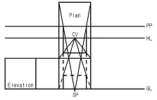
- 1소점 투시도
- 2소점 투시도
- 3소점 투시도
- 표고 투상도
(정답률: 71%)
27. 다음 문장의 ( )에 들어갈 내용으로 옳은 것은?
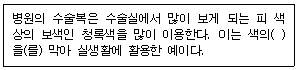
- 정의 잔상
- 부의 잔상
- 동화 효과
- 베졸트 효과
(정답률: 71%)
28. 혼색계의 설명으로 옳지 않은 것은?
- 물체색을 표시하는 표색계이다.
- 대표적인 것은 CIE 표준 표색계이다.
- 좌표 또는 수치를 이용하여 표현하는 체계이다.
- 심리적이고 물리적인 빛의 혼색 실험결과에 기초를 두고 있다.
(정답률: 43%)
29. 색채조화의 공통된 원리 중 '비모호성의 원리'란?
- 질서 있는 계획에 따라 선택된 색은 조화된다.
- 잘 알려져 있는 배색이 잘 조화된다.
- 어느 정도 공통의 양상과 성질을 지니면 조화된다.
- 애매함이 없고 명료하게 선택된 배색에 의해 조화된다.
(정답률: 78%)
30. 다음 평면도법 중 각을 등분하는 것이 아닌 것은?
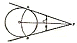
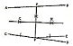
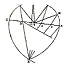
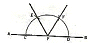
(정답률: 53%)
31. 다음 중 투상도 선택의 원칙으로 틀린 것은?
- 은선이 적은 투상도를 선택한다.
- 대상물을 이해하는 데 가장 좋은 정보를 주는 투상도를 정면도 또는 주 투상도로 한다.
- 여러 개의 면이 교차하는 것을 필요로 하지 않도록 투상도를 선택한다.
- 대상물의 이해를 돕기 위해 주 투상도를 보충하는 부분 투상도는 되도록 많이 한다.
(정답률: 64%)
32. 하나의 색이 그보다 탁한 색 옆에 위치할 때 실제보다 더 선명하게 보이는 대비현상은?
- 색상대비
- 채도대비
- 보색대비
- 계시대비
(정답률: 75%)
33. 어두운 영화관에 들어간 후 서서히 물체가 보이는 것과 가장 밀접한 관련성이 있는 것은?
- 색순응
- 항상성
- 명암순응
- 잔상
(정답률: 75%)
34. 두 개 이상의 색을 보게 될 때, 때로는 색들끼리 서로 영향을 주어서 인접색에 가까운 것으로 느껴지는 경우가 있다. 이러한 현상을 뜻하는 내용과 관련이 없는 것은?
- 동화효과
- 전파효과
- 혼색효과
- 감정효과
(정답률: 46%)
35. 다음 중 채도로 색을 구분하는 용어가 아닌 것은?
- 기본색
- 순색
- 명청색
- 탁색
(정답률: 61%)
36. 다음 제도용지 중 A3의 크기는?
- 210mm x 297mm
- 297mm x 420mm
- 420mm x 594mm
- 594mm x 841mm
(정답률: 85%)
37. 다음 그림과 같은 입체물의 우측면도는?(단, 화상표 방향이 정면임)
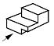
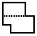
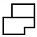
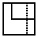
(정답률: 83%)
38. 명소시에서 암소시로 옮겨갈 때 붉은색은 어둡게 되고 녹색과 청색은 상대적으로 밝게 변화되는 현상은?
- 색각항상 현상
- 무채순응 현상
- 푸르킨예 현상
- 회절 현상
(정답률: 89%)
39. 다음 그림의 평면도법은 무엇을 나타내는가?
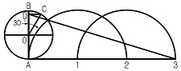
- 원주 밖의 1점에서 원의 접선 긋기
- 원주에 근사한 직선 구하기
- 원에 외접선 그리기
- 원호를 직선으로 펴기
(정답률: 59%)
40. 색이 시각 외에 다른 감각 기관의 느낌을 수반하는 것을 무엇이라고 하는가?
- 색각
- 공감각
- 온도감
- 중량감
(정답률: 69%)
3과목: 디자인 재료
41. 롤러 브러시의 장점으로 맞는 것은?
- 천장, 벽, 바닥 등 평면이나 면적이 넓은 피도장물을 능률적으로 도장할 수 있다.
- 손으로 직접 닿을 높이 정도만 도장할 수 있다.
- 기구의 형태가 크고 무겁다.
- 기구의 손질이 어렵다.
(정답률: 87%)
42. 필름의 감도를 표시하는 기호 중 국제표준화 규격으로 세계적으로 널리 사용되고 있는 것은?
- ASA
- DIN
- ISO
- ASO
(정답률: 89%)
43. 과거에는 화지라 하여 삼지닥나무를 원료로 한 것으로 잡지의 표지, 사무 포장용으로 주로 쓰이는 종이는?
- 모조지
- 아트지
- 와트만지
- 켄트지
(정답률: 43%)
44. 플라스틱의 장단점에 관한 일반적인 설명 중 잘못된 것은?
- 표면의 경도가 높다.
- 착색이 용이하다.
- 열팽창 계수가 크다.
- 가공이 용이하다.
(정답률: 54%)
45. 종이에 플라스틱 필름. 금속의 박을 붙이거나, 종이를 서로 붙여서 두꺼운 판지. 골판지를 만드는 가공 방법은?
- 흡수 가공
- 엠보싱 가공
- 변성 가공
- 배접 가공
(정답률: 76%)
46. 파스텔을 렌더링용으로 사용할 때 부드러운 효과를 얻기 위해 혼합하는 것은?
- 파우더
- 포스트 물감
- 콘테
- 연필
(정답률: 81%)
47. 무기재료에 해당되지 않는 것은?
- 금속
- 유리
- 도자기
- 플라스틱
(정답률: 67%)
48. 귀금속을 도금할 때 너무 많은 전류가 흘러서 거친 도금이 된 것으로 갈색, 무광택, 백색, 회흑색 석출물로 나타나는 도금 결함의 명칭은?
- 무도금(bare spot)
- 탄도금(burning)
- 피트(pit)
- 얼룩(stain)
(정답률: 80%)
4과목: 컴퓨터 그래픽스
49. 비트맵 이미지의 특징이 아닌 것은?
- 깊이 있는 색조와 부드러운 질감을 나타낼 수 있다.
- 이미지의 크기에 따라 출력에 영향을 준다.
- 압축을 통해 해상도와 파일크기의 조절이 가능하다.
- 베지어 곡선의 오브젝트로 구성된다.
(정답률: 70%)
50. 컴퓨터의 중앙처리장치로 작업시 모든 정보를 통제, 제어, 관리하는 기능을 갖는 것은?
- Hard Disk
- CPU
- ROM
- Register
(정답률: 88%)
51. 다음 컴퓨터그래픽 시스템 구성 중 출력장치는?
- 키보드
- 플로터
- 스캐너
- 디지타이저
(정답률: 83%)
52. 일러스트레이터 프로그램에서 단축키인 Ctrl+Z(MAC:Command+Z)와 반대되는 기능은?
- Redo
- Undo
- Zoom In
- Zoom Out
(정답률: 65%)
53. 2차원 이미지를 3차원 이미지처럼 입체적으로 보이게 하기 위해 주로 사용하는 필터는?
- Blur 필터
- Soft 필터
- Emboss 필터
- Sharpen 필터
(정답률: 82%)
54. 24비트 컬러 중에서 정해진 256컬러의 컬러표를 사용하는 컬러 시스템은?
- gray mode
- bitmap mode
- index color mode
- CMYK mode
(정답률: 66%)
55. 포토샵(Photoshop)에서 이미지의 색상 정보를 관리하는 기능을 갖고 있으며, 선택영역을 저장한 뒤 여러 가지 형태 로 변형 보존하고 알파 값으로 관리하는 기능을 가지고 있는 것은?
- 레이어(Layer)
- 팔레트(Palate)
- 채널(Channel)
- 액션(Action)
(정답률: 63%)
56. 투명한 도면 같은 것으로, 여러 장 겹쳐서 하나의 이미지로 만들어 수정 작업을 용이하게 하는 기능은?
- 채널(Channel)
- 패스(Path)
- 레이어(Layer)
- 스와치(Swatches)
(정답률: 84%)
57. 3차원 그래픽에서 시각적으로 꼭지점들을 연결하는 선으로 물체를 표현하는 방법은?
- 표면 모델링
- 솔리드 모델링
- 와이어 프레임 모델링
- 프랙탈 모델링
(정답률: 77%)
58. 톱니 모양의 우툴두툴한 비트맵 이미지의 가장자리 픽셀들을 주변색상과 혼합한 중간색상을 넣어 매끄럽게 처리하는 방식은?
- 질감전사(Mapping)
- 렌더링(Rendering)
- 모델링(Modeling)
- 안티앨리어싱(Anti-aliasing)
(정답률: 86%)
59. 벡터 이미지의 특성에 대한 설명으로 옳지 않은 것은?
- 선과 면이 깔끔하고 정갈하다.
- 다양한 질감과 사실적인 효과의 연출이 가능하다.
- 글자, 로고, 캐릭터 디자인에 적합하다.
- 축소, 확대하더라도 이미지의 질에 영향을 주지 않는다.
(정답률: 72%)
60. 포토샵(Photoshop)의 색상 모드에 대한 설명 중 틀린 것은?
- 이미지를 Bitmap 모드로 변환하려면 일단 이미지가Grayscale 상태이어야 한다.
- RGB 이미지는 포토샵이 지원하는 모든 저장 형식으로 저장할 수 있다.
- Lab 모드에서 이미지 수정은 CMYK 모드 보다 훨씬 느리다.
- Grayscale 모드는 256단계의 회색 음영으로 표현되며 어느 모드에서든 변환할 수 있고, 다른 모드로의 변환도 가능하다.
(정답률: 64%)